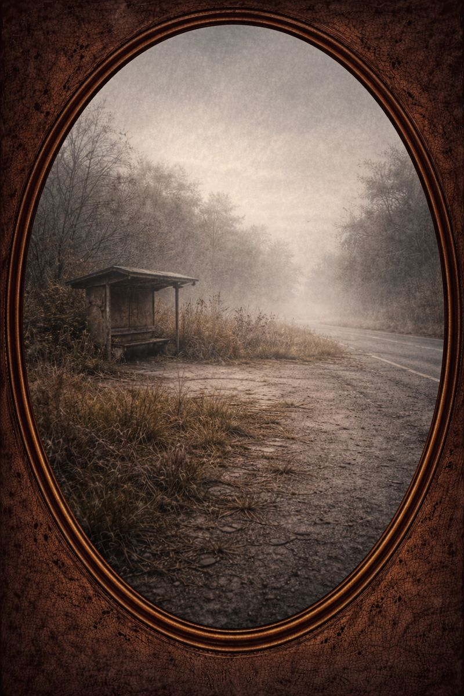

<!DOCTYPE html>
<html lang="en">
<head>
  <meta charset="UTF-8" />
  <title>Samsara — Reveal</title>
  <meta name="viewport" content="width=device-width, initial-scale=1.0" />

  <audio id="samsara-audio" preload="auto">
    <source src="assets/audio/samsara-ambient.mp3" type="audio/mpeg">
  </audio>

  <script src="render/audio.js"></script>

  <style>
    :root {
      --bg: #0b0b0b;
      --fg: #f5ebc8;
      --muted: rgba(245,235,200,0.6);
      --accent: rgba(245,235,200,0.9);
    }

    * {
      box-sizing: border-box;
      font-family: "Inter", system-ui, sans-serif;
    }

    body {
      margin: 0;
      background: var(--bg);
      color: var(--fg);
      overflow-x: hidden;
    }

    .void {
      position: fixed;
      inset: 0;
      background: radial-gradient(circle at center, rgba(245,235,200,0.03), transparent 70%);
      z-index: 0;
    }

    main {
      position: relative;
      z-index: 1;
      min-height: 100vh;
      padding: 12vh 10vw;
      display: flex;
      align-items: center;
      justify-content: center;
    }

    .reveal {
      max-width: 720px;
      text-align: center;
      opacity: 0;
      transform: translateY(20px);
      animation: fadeIn 2.5s ease forwards;
    }

    @keyframes fadeIn {
      to { opacity: 1; transform: translateY(0); }
    }

    h1 {
      font-size: clamp(2.4rem, 6vw, 3.6rem);
      letter-spacing: 0.05em;
      margin-bottom: 0.5em;
    }

    .subtitle {
      font-size: 0.9rem;
      letter-spacing: 0.2em;
      text-transform: uppercase;
      color: var(--muted);
      margin-bottom: 2.5em;
    }

    .archetype-image {
      width: 100%;
      max-width: 420px;
      margin: 2.5em auto;
      border-radius: 6px;
      box-shadow: 0 20px 60px rgba(0,0,0,0.6);
      display: block;
      opacity: 0;
      transform: translateY(10px);
      animation: imageFade 2s ease forwards;
    }

    @keyframes imageFade {
      to { opacity: 1; transform: translateY(0); }
    }

    .role {
      font-style: italic;
      color: var(--accent);
      margin: 2em 0;
      line-height: 1.7;
    }

    .attributes ul {
      list-style: none;
      padding: 0;
      margin-bottom: 3em;
    }

    .attributes li {
      margin: 0.4em 0;
      color: var(--muted);
      font-size: 0.9rem;
    }

    .initiation {
      margin-top: 3em;
      padding-top: 2em;
      border-top: 1px solid rgba(245,235,200,0.15);
    }

    .initiation h3 {
      letter-spacing: 0.15em;
      text-transform: uppercase;
      font-size: 0.85rem;
      margin-bottom: 1.5em;
      color: var(--accent);
    }

    .initiation p {
      font-size: 0.95rem;
      line-height: 1.8;
      color: var(--muted);
    }

    .closing {
      margin-top: 4em;
      font-size: 0.95rem;
      color: var(--muted);
      line-height: 1.7;
    }

    .inner-circle-gate {
      margin-top: 4.5rem;
      display: flex;
      justify-content: center;
      opacity: 0;
      animation: gateFadeIn 3s ease forwards;
      animation-delay: 2.5s;
    }

    .inner-circle-button {
      padding: 0.9rem 2.6rem;
      border-radius: 999px;
      font-size: 0.85rem;
      letter-spacing: 0.18em;
      text-transform: uppercase;
      text-decoration: none;
      color: rgba(43,43,43,0.85);
      background: radial-gradient(circle at 30% 30%, rgba(255,255,255,0.95), rgba(255,255,255,0.65) 60%, rgba(230,225,215,0.45));
      backdrop-filter: blur(6px);
      box-shadow: 0 10px 30px rgba(0,0,0,0.08), inset 0 0 18px rgba(255,255,255,0.6);
      transition: transform 0.6s ease;
    }

    .inner-circle-button:hover {
      transform: scale(1.06);
    }

    @keyframes gateFadeIn {
      to { opacity: 1; }
    }
  </style>
</head>

<body>
<div class="void"></div>

<main>
  <section class="reveal" id="reveal"></section>
</main>

<script src="render/logic.js"></script>

<script>
/* ================= IMAGE REGISTRY ================= */
const ARCHETYPE_IMAGES = {
  Steward: { male: "assets/images/steward.png", female: "assets/images/steward.png" },
  Lover: { male: "assets/images/lover.png", female: "assets/images/lover.png" },
  Jester: { male: "assets/images/jester.png", female: "assets/images/jester.png" },
  Seeker: { male: "assets/images/seeker.png", female: "assets/images/seeker.png" },
  Alchemist: { male: "assets/images/alchemist.png", female: "assets/images/alchemist.png" },
  Sage: { male: "assets/images/sage.png", female: "assets/images/sage.png" },
  StoryWeaver: { male: "assets/images/storyweaver.png", female: "assets/images/storyweaver.png" },
  Tradesman: { male: "assets/images/tradesman.png", female: "assets/images/tradesman.png" },
  Catalyst: { male: "assets/images/catalyst.png", female: "assets/images/catalyst.png" },
  Drifter: { male: "assets/images/drifter.png", female: "assets/images/drifter.png" }
};

/* ================= META ================= */
const ARCHETYPE_META = {
  Steward: {
    role: "The one who holds the walls steady — not the one who is seen, but the one everything depends on.",
    traits: ["Grounded", "Dependable", "Systemic", "Loyal", "Calm"]
  },
  Lover: {
    role: "The one who feels first — attuning to beauty, harmony, and emotional truth.",
    traits: ["Empathetic", "Heart-led", "Sensory", "Creative", "Devoted"]
  },
  Jester: {
    role: "The one who punctures illusion — laughing where others cling to seriousness.",
    traits: ["Playful", "Disruptive", "Ethical challenger", "Flux-driven", "Reflective"]
  },
  Seeker: {
    role: "The one who cannot stop asking — walking to understand, not arrive.",
    traits: ["Curious", "Restless", "Independent", "Analytical", "Questioning"]
  },
  Alchemist: {
    role: "The one who transforms quietly — shifting the unseen so reality changes.",
    traits: ["Transformative", "Innovative", "Intentional", "Bridges spirit & matter", "Subtle"]
  },
  Sage: {
    role: "The one who bows first — listening to life’s intelligence before acting.",
    traits: ["Reverent", "Spirit-led", "Wise", "Still", "Guiding"]
  },
  StoryWeaver: {
    role: "The one who sits slightly to the side of the fire, listening — then retelling the night so others know what it meant.",
    traits: ["Narrative", "Symbolic", "Dreamer", "Translator", "Pattern-seer"]
  },
  Tradesman: {
    role: "The one who builds with their hands — turning intention into form.",
    traits: ["Practical", "Skilled", "Reliable", "Grounded", "Integrity-driven"]
  },
  Catalyst: {
    role: "The spark that lights the fire — not the flame that sustains it.",
    traits: ["Initiator", "Fast-moving", "Inspirational", "Decisive", "Intense"]
  }
};

/* ================= INITIATIONS ================= */
const ARCHETYPE_INITIATIONS = {
  Sage: {
    title: "The Hill of Reverence",
    rite: "Sit alone on high ground for two hours. No music. No seeking. Attend only to God, nature, and what listens back."
  },
  Steward: {
    title: "The Vigil of Continuity",
    rite: "Maintain something that does not belong to you. No recognition. Only care."
  },
  Lover: {
    title: "The Offering of Presence",
    rite: "Create beauty for someone else without explanation. Stay past discomfort."
  },
  Jester: {
    title: "The Mirror Walk",
    rite: "Speak lightly but truthfully for one full day. Watch where laughter hides fear."
  },
  Seeker: {
    title: "The Unanswered Path",
    rite: "Walk alone somewhere unfamiliar. Ask sincere questions. Resolve nothing."
  },
  Alchemist: {
    title: "The Silent Transmutation",
    rite: "Sit with an unsolved problem in stillness for one hour. Let it change you."
  },
  StoryWeaver: {
    title: "The Night Retelling",
    rite: "Write a true story of conflict where meaning emerges without blame."
  },
  Tradesman: {
    title: "The Honest Craft",
    rite: "Build or repair something tangible until fatigue arrives. Stop before perfection."
  },
  Catalyst: {
    title: "The First Strike",
    rite: "Begin the thing you have delayed. Take one irreversible action."
  }
};

/* ================= RENDER ================= */
const archetypeRaw = localStorage.getItem("samsara_archetype");
const gender = localStorage.getItem("gender") === "female" ? "female" : "male";
const container = document.getElementById("reveal");

if (archetypeRaw === "Drifter") {
  container.innerHTML = `
    <div class="subtitle">Pattern Detected</div>
    <h1>Drifter</h1>
    
  `;
} else {
  const parts = archetypeRaw.split("–");
  const primary = parts[0];
  const secondary = parts[1] || null;
  const imageSrc = ARCHETYPE_IMAGES[primary]?.[gender];
  const initiation = ARCHETYPE_INITIATIONS[primary];

  container.innerHTML = `
    <div class="subtitle">Your Archetype</div>
    <h1>${archetypeRaw.replace("–", " & ")}</h1>

    ${imageSrc ? `` : ""}

    <div class="role">${ARCHETYPE_META[primary].role}</div>

    <div class="attributes">
      <ul>${ARCHETYPE_META[primary].traits.map(t => `<li>${t}</li>`).join("")}</ul>
    </div>

    ${secondary ? `
      <div class="role">${ARCHETYPE_META[secondary].role}</div>
      <div class="attributes">
        <ul>${ARCHETYPE_META[secondary].traits.map(t => `<li>${t}</li>`).join("")}</ul>
      </div>
    ` : ""}

    ${initiation ? `
      <div class="initiation">
        <h3>${initiation.title}</h3>
        <p>${initiation.rite}</p>
      </div>
    ` : ""}

    <div class="closing">
      This archetype is not a limit — it is a threshold.<br>
      What matters is whether you step through it.
    </div>

    <div class="inner-circle-gate">
      <a href="samsara.html" class="inner-circle-button">Join the Inner Circle</a>
    </div>
  `;
}
</script>
</body>
</html>
